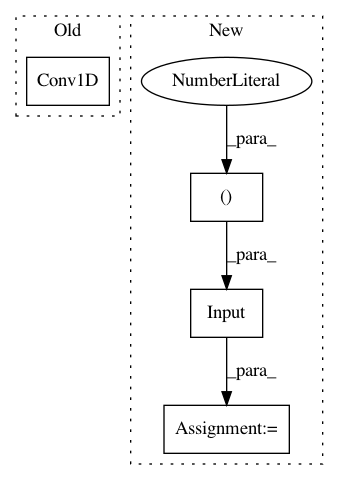

5f73fe0599380479a37029de1d5647f33aae18c8,main.py,ModelSpeech,CreateModel,#ModelSpeech#,23
Before Change
_model = Sequential()
_model.add(LSTM(self.MS_EMBED_SIZE, return_sequences=True, input_shape = (200,400))) // input_shape需要修改
_model.add(Dropout(0.3))
_model.add(Conv1D(self.QA_EMBED_SIZE // 2, 5, border_mode="valid"))
_model.add(MaxPooling1D(pool_length=2, border_mode="valid"))
_model.add(Dropout(0.3))
_model.add(Flatten())
After Change
输出层：全连接层，神经元数量为1279，使用softmax作为激活函数，使用CTC的loss作为损失函数
"""
// 每一帧使用13维mfcc特征及其13维一阶差分和13维二阶差分表示，最大信号序列长度为1500
layer_input = Input((1500,39))
layer_h1 = Conv1D(256, 5, use_bias=True, padding="valid")(layer_input) // 卷积层
layer_h2 = MaxPooling1D(pool_size=2, strides=None, padding="valid")(layer_h1) // 池化层
layer_h3 = Dropout(0.2)(layer_h2) // 随机中断部分神经网络连接，防止过拟合
In pattern: SUPERPATTERN
Frequency: 3
Non-data size: 4
Instances
Project Name: nl8590687/ASRT_SpeechRecognition
Commit Name: 5f73fe0599380479a37029de1d5647f33aae18c8
Time: 2017-09-04
Author: 3210346136@qq.com
File Name: main.py
Class Name: ModelSpeech
Method Name: CreateModel
Project Name: rtavenar/tslearn
Commit Name: a38a14f46715b7b0411d89c2e86854cf074c05a2
Time: 2017-09-22
Author: romain.tavenard@univ-rennes2.fr
File Name: tslearn/shapelets.py
Class Name: ShapeletModel
Method Name: _set_model_layers
Project Name: deepchem/deepchem
Commit Name: b68db1aaf6abe4d2cea8321cc6f1564228dd60f5
Time: 2019-05-31
Author: peastman@stanford.edu
File Name: deepchem/models/tensorgraph/models/seqtoseq.py
Class Name: AspuruGuzikAutoEncoder
Method Name: _create_encoder